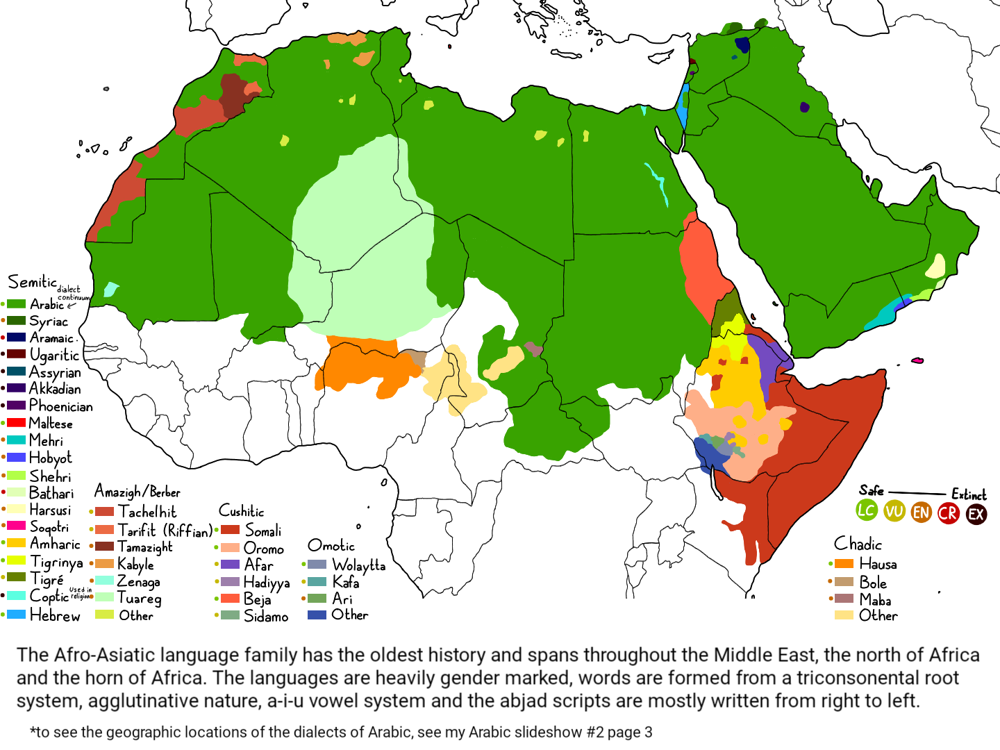
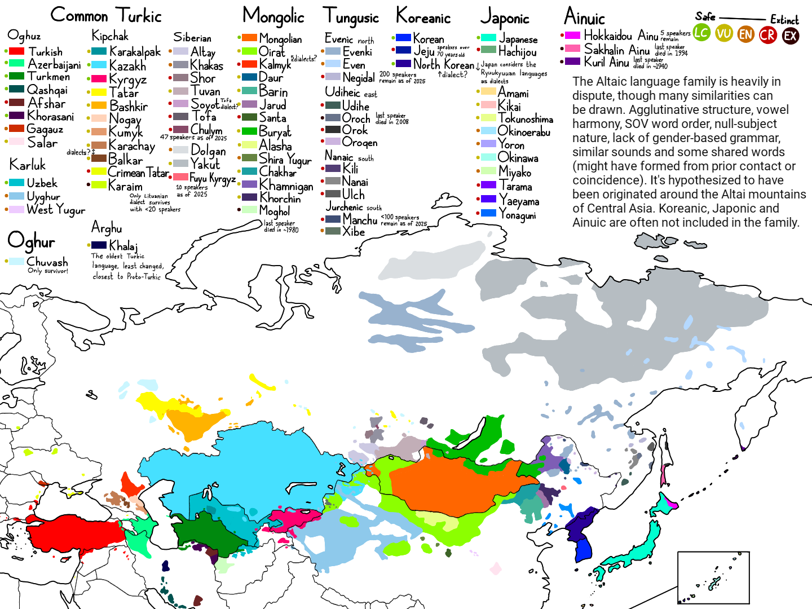
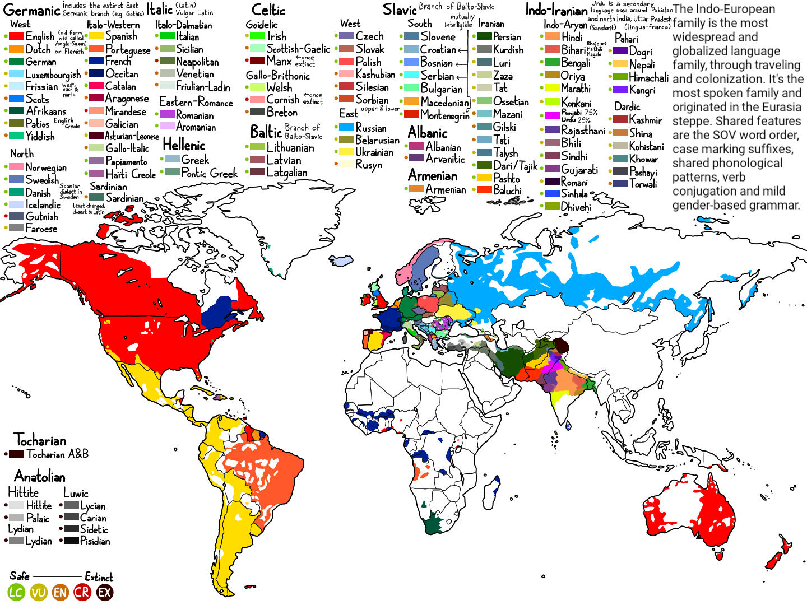
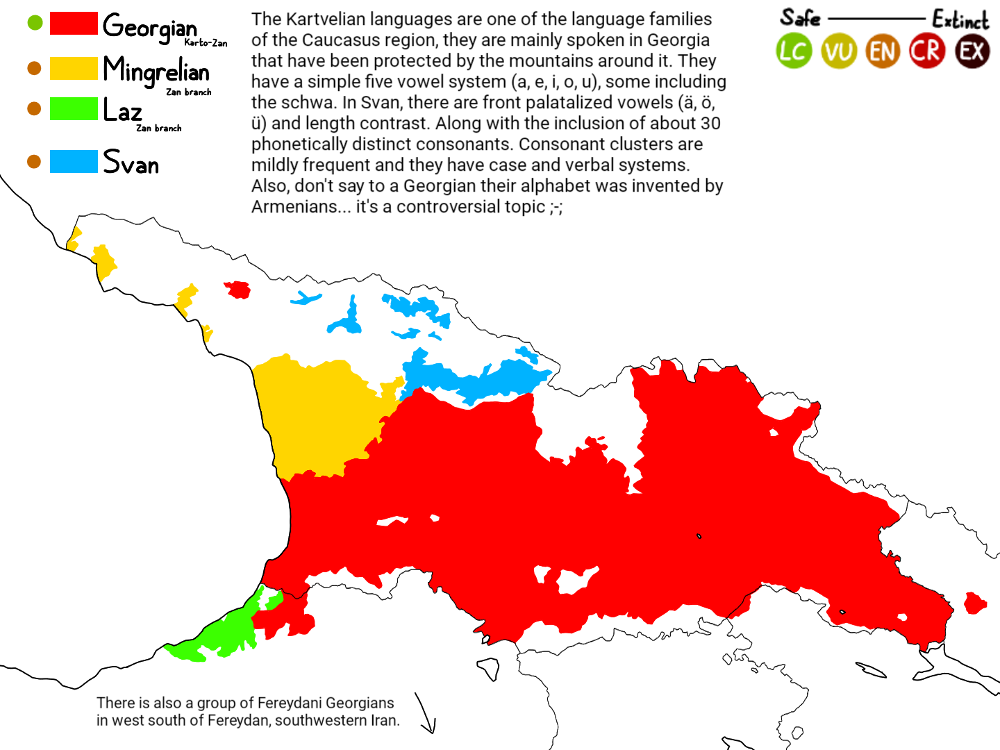
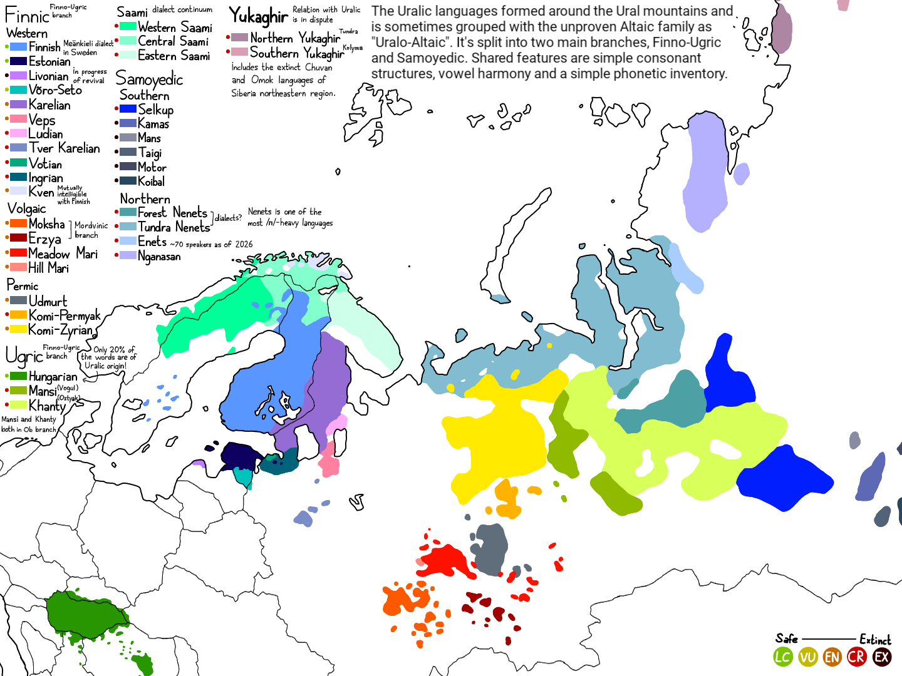

De Afro-Asiatische taalfamilie is de oudste taalfamilie. De talen hebben meestal een klankersinventaris van drie klankers: /a/, /i/ en /u/. Ze hebben ook worden die van stammen komen die opgebouwd zijn van drie of meer medeklinkers, bijvoorbeeld "ف" (f) + "ع" (c) + "ل" (l) betekent actie, "ك" (k) + "ت" (t) + "ب" (b) betekent schrift. Een gendergerelateerde grammatica is ook aanwezig. Je zult merken dat de talen ook veel van de geluiden van de keel komen.
Het heeft zich gevormt rond in Egypte en de hoorn van Africa. Het heeft vijf aftakkingen: Semetisch, Berber/Amazigt, Cushitisch, Chadisch, Omotisch (niet vastgesteld) en Egyptisch (extinct). Bekende talen zijn Arabisch en Somalisch.

De Altaïsche taalfamilie is niet bewezen, maar er zijn heel veel overeenkomsten tussen de talen die zich hier bevinden, bijvoorbeeld een klinkerharmonie, simpele medeklinkerstuctuur, precies hetzelfde syntax (SOV), een onomatopoëtische vorming. Er zijn ook een paar worden die gedeeld zijn, wat kan gevormt zijn via jaren lang contact of zelfs toevallen. De medeklinkerinventaris is best simpel.
Het heeft zich gevormd rond in het centraal-Aziatische gebied, in de Altai bergen, Mongolië. Het heeft zes aftakkingen: Turkisch, Mongolisch, Tungusisch, soms Koreanisch, Japonisch en heel zelden Ainuisch (bijna afgestorven). Bekende talen zijn Turks, Mongools en Japans.

De Indo-Europese taalfamilie is de grootste, hier zul je het meeste talen vinden die je al waarschijnlijk kent. Het heeft een ingewikkelde grammatica en een woordvorming. Casusmarkeringen zijn aanwezig, maar meeste talen hebben ze verloren door duizende jaren. De Indo-Iranees, Balto-Slavisch en Hellenische aftakkingen hebben het behouden. Hier vind je ook een gendergerelateerde grammatica, maar niet net zo zwaar als Afro-Asiatisch. Ze hebben ook een complexe medeklinkerstructuur.
Het heeft zich gevormd rond in het Euraziatische steppe. Het heeft twaalf aftakkingen: Germanisch, Italisch, Celtisch, Slavisch, Baltisch, Albanisch, Hellenisch, Armenisch, Iranisch, Aryaans, Anatolisch (uitgestorven) en Tocharisch. Bekende talen zijn Engels, Duits, Spaans en Hindi.

De Kartvelische taalfamilie is een van de kleinste, en bevindt zich in the Caucausische regio, Georgië, beschermt door de bergen rond zich. Terwijl de klankersinventaris simpel is van 5 klankers: /a/, /e/, /i/, /o/ en /u/, heeft de medeklinkerinventaris ongeveer dertig tot veertig fonetisch onderscheidende medeklinkers. Een complexe grammatica, rijke woordvorming, agglutinerende natuur, een SOV syntax en medeklinkerstructuur zijn allemaal aanwezig. Alle talen hier organizeren werkwoorden in drie series "SCREEVE" (tense-aspect-mood) die morfologisch begroept zijn: tegenwoordig, aorist en perfect. Ze passen de naamvaluitlijning, het overeenkomstpatroon en de morfologie aan.
Deze taalfamilie heeft slechts vier talen: Georgisch, Mingreliaans, Laz en Svan. Het heeft zich gevoormd in de Caucausische regio. Bekende talen zijn Georgisch.

De Oeralische taalfamilie is soms ook begroept met de Altaïsche taalfamilie, samen met de Yukaghir. Het is gesplitst in twee grote takken: de Finno-Ugrische en de Samoëlische groep. Hier vind je een simpele medeklinkerstructuur met een klinkerharmonie. Zoals Altaïsch heeft het ook een simpele medeklinkerinventaris.
Het heeft zich gevormd rond de Oeraal bergen in Azië, Rusland. Het heeft zes takken: Finnisch, Ugrisch, Volgaisch, Permisch, Saamisch en Samoëlisch. Bekende talen zijn Finns, Ests en Hongaars, met de meeste sprekers.